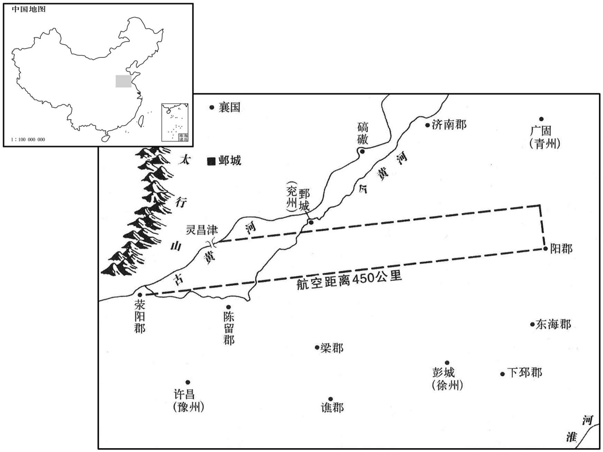
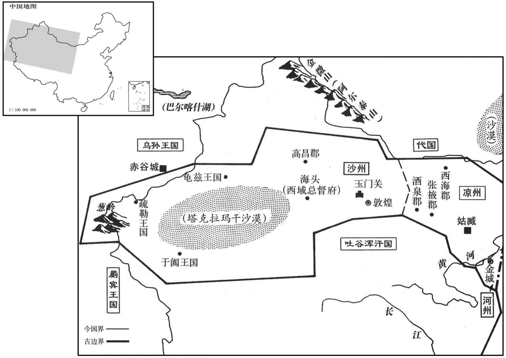

公元345年资治通鉴：本年记事、原文与白话对照
按原书编年位置阅读；追叙和史论不等于本年发生的事件。白话采用所据译本，缺译不以生成译文补齐。
卷97 · 本年记事
公元345年 · 晋孝宗穆皇帝永和元年
永和元年〔（乙巳、三四五）〕
本年事件索引（现代整理）

本年形势与背景参考图

本年形势与背景参考图
春，正月，甲戌朔，皇太后设白纱帷于太极殿，抱帝临轩。
春季，正月，甲戌朔（疑误），皇太后在太极殿设置白纱帷怅，抱着穆帝驾临殿前。
赵义阳公鉴镇关中，役烦赋重；文武有长发者，辄拔为冠缨，〔缨，冠系也。〕余以给宫人。长史取发白赵王虎，虎征鉴还邺，以乐平公苞代镇长安。发雍、洛、秦、并州十六万人〔石虎分司州之河南、弘农、荥阳，兖州之陈留、东燕置洛州。雍，于用翻。〕治长安未央宫。〔治，直之翻。〕
后赵义阳公石鉴镇守关中，徭役繁多，赋税沉重。文武官员头发长的，就拔下来当冠帽的缨绳，剩下的送给宫女。长史拿着头发禀报后赵王石虎，石虎征召石鉴回邺城，让乐平公石苞代为镇守长安。又征发雍州、洛州、秦州、并州的十六万人营建长安未央宫。
虎好猎，晚岁，体重不能跨马，乃造猎车千乘，〔好，呼到翻。乘，绳证翻。〕刻期校猎。自灵昌津南至荥阳东极阳都为猎场，〔阳都县，前汉属城阳国，后汉、晋属琅邪国。贤曰：阳都故城在今沂州沂水县南；又曰，在承县南。〕使御史监察，〔监，工衔翻。〕其中禽兽，有犯者罪至大辟。〔辟，毗亦翻。〕民有美女、佳牛马，御史求之不得，皆诬以犯兽，论死者百余人。发诸州二十六万人修洛阳宫。发百姓牛二万头配朔州牧官。〔赵置牧官于朔方。〕增置女官二十四等，东宫十二等，公侯七十余国皆九等，大发民女三万余人，料为三等以配之；太子、诸公私令采发者又将万人。郡县务求美色，多强夺人妻，杀其夫及夫自杀者三千余人。至邺，虎临轩简第，以使者为能，封侯者十二人。荆楚、扬、徐之民流叛略尽；〔荆楚，以国言，扬、徐，以州言。赵之壤地，南阳、汝南则故荆楚之地也，寿阳则扬州之地也，彭城、下邳、东海、琅邪、东莞则徐州之地也。一曰，荆楚、扬、徐之民先被掠及流入北界者，今流叛略尽。〕守令坐不能绥怀，下狱诛者五十余人。〔下，遐稼翻。〕金紫光禄大夫逯明〔金紫光禄大夫，即光禄大夫之加金章紫绶者，自此遂以为为官称。逯，卢谷翻。〕因侍切谏，〔因侍见而切谏也。〕虎大怒，使龙腾拉杀之。〔虎募骁勇，拜为龙腾中郎。拉，落合翻。〕
石虎喜欢打猎，晚年身体沉重不能骑马，就建造打猎用的车子一千辆，定期比赛打猎。从灵昌津向南到荥阳东境的阳都，都划为猎场，让御史监护，其中的禽兽有人敢伤害，便获罪，被处以大辟的极刑。百姓有美丽女子或上好的牛马，御史如果弄不到手，就诬陷他们伤害禽兽，论罪处死的有一百多人。又征发各州二十六万人修建洛阳宫，征发百姓牛畜二万头调配给朔州的牧官。又增设宫中女官，分置二十四等，东宫十二等，七十多个公侯封国都分九等，大举征选民女三万多人，分成三等配置各处。太子、各王公私下发令征选的美女又将近万人。各个郡县极力选取美女，经常强行夺占百姓的妻子，杀害她们的丈夫，加上丈夫自杀的，人数达三千多。美女送到邺后，石虎在殿前挑选分等，因为使者能干，被封侯的有十二人。荆楚、扬州、徐州的民众流失、背叛几乎无存。当地的守令坐罪因不能安绥关切他们，被下狱诛杀的有五十多人。金紫光禄大夫明乘侍奉石虎时直言力谏，石虎大怒，让骁勇的龙腾中郎将他摧折而死。
燕王皝以牛假贫民，使佃苑中，〔佃，亭年翻。〕税其什之八，自有牛者税其七。记室参军封裕上书谏，以为「古者什一而税，天下之中正也。降及魏、晋，仁政衰薄，假官田官牛者不过税其什六，自有牛者中分之，犹不取其七八也。自永嘉以来，海内荡析，武宣王绥之以德，〔慕容廆谥武宣王。〕华夷之民，万里辐凑，襁负而归之者，若赤子之归父母，是以户口十倍于旧，无田者什有三四。及殿下继统，南摧强赵，东兼高句丽，北取宇文，〔民归慕容廆事见八十八卷愍帝建兴元年；皝破赵事见上卷成帝咸康四年；破高丽见上卷咸康八年；取宇文见上康帝建元二年。〕拓地三千里，增民十万户；是宜悉罢苑囿以赋新民，无牛者官赐之牛，不当更收重税也。且以殿下之民用殿下之牛，牛非陛下之有，将何在哉！如此，则戎旗南指之日，民谁不箪食壶浆以迎王师，〔用孟子语。食，祥吏翻。〕石虎谁与处矣！〔处，昌吕翻；下同。〕川渎沟渠有废塞者，〔塞，悉则翻；下同。〕皆应通利，旱则灌溉，潦则疏泄。一夫不耕，或受之饥，况游食数万，何以得家给人足乎！今官司猥多，虚费廪禄，苟才不周用，皆宜澄汰。〔以用水为谕，澄之使清而汰去其沙泥也。〕工商末利，宜立常员。学生三年无成，徒塞英儁之路，皆当归之于农。〔塞，悉则翻。〕殿下圣德宽明，博察刍荛，〔文王诣于刍荛。刈草曰刍，采薪曰荛。荛，如招翻。〕参军王宪、大夫刘明并以言事忤旨，主者处以大辟，〔主者，谓其时主断宪、明之狱者。忤，五故翻。处，昌吕翻。辟，毗亦翻。〕殿下虽恕其死，犹免官禁锢。夫求谏诤而非直言，是犹适越而北行，必不获其所志矣。石长史宋该等阿媚苟容，轻劾谏士，〔劾，户概翻，又户得翻。〕己无骨鲠，〔骨鲠，以喻刚强正直者。毛晃曰：鲠，鱼骨；又骨不下咽为鲠。以其謇谔难受，如鱼骨之咈咽也。〕嫉人有之，掩蔽耳目，不忠之甚者也。」皝乃下令，称：「览封记室之谏，孤实惧焉。国以民为本，民以谷为命，可悉罢苑囿以给民之无田者。实贫者，官与之牛；力有余愿得官牛者，并依魏、晋旧法。沟渎各〔【章：十二行本「各」作「果」；乙十一行本同；孔本同。】〕有益者，令以时修治。〔治，直之翻。〕今戎事方兴，勋伐既多，〔王功曰勋；积功曰伐。〕官未可减，俟中原平壹，徐更议之。工商、学生皆当裁择。夫人臣关言于人主，至难也，〔关，白也。王褒圣主得贤臣颂曰：进退得关其忠。〕虽有狂妄，当择其善者而从之。王宪、刘明，虽罪应废黜，亦由孤之无大量也，可悉复本官，仍居谏司。封生蹇蹇，深得王臣之体，〔易曰：王臣蹇蹇，匪躬之故。〕其赐钱五万。宣示内外，有欲陈孤过者，不拘贵贱，勿有所讳！」皝雅好文学，〔好，呼到翻。〕常亲临庠序讲授，考校学徒至千余人，颇有妄滥者，故封裕及之。
前燕王慕容把牛借给贫民，让他们在苑囿中佃耕，赋税收取十分之八，自己有牛的收税十分之七。记室参军封裕上书规谏，认为：“古时按十分之一的比例收税，这是天下最公正的税法。延及魏、晋，仁政衰微，借官田、官牛的也不过纳税十分之六，自己有牛的只纳税一半，尚且不采用十分之七八的税制。从永嘉年以来，国内动荡离析，武宣王用仁德安绥民众，汉族和夷族的民众，不远万里前来汇集，背负襁褓来归附的情景，如同幼儿归附父母。所以人口户数比起以往增长十倍，没有田地的人达十分之三四。等到殿下继位，在南方挫败强大的赵国，在东方兼并了高句丽，在北方攻取宇文部，拓展国土三千里，增加民众十万户。此时应当全部放弃苑囿分给新附民众耕种，没牛的官府赐给牛，不应再收取重税。况且以殿下之民的身份使用殿下的牛，牛不为殿不私有，又为何人所有呢！这样，则战旗南指的那一天，百姓们谁不送饭送水，勇跃犒劳，迎接大王的军队呢？石虎又能与谁共处呢！川渎沟渠有毁废堵塞的，都应开通、疏浚，天旱可以灌溉，天涝可以泄洪。一人不耕种，就会有人挨饿，更何况游动民众有数万人，怎能做到家有裕财，人人丰足呢！现在各种官吏众多，白白耗费俸禄，只要才能不堪任用，都应淘汰。从事工商业获利，应当设置固定人数。学员三年无所成就，白白堵塞才的晋升之路，都应当遣返他们重新务农。殿下圣德宽明，广泛地考察征求樵人、渔夫的意见。参军王宪、大夫刘明都因论事违背圣旨，主持的官员判处大辟酷刑，殿下虽然饶恕他们死罪，但仍然免去官职，禁锢不用。寻求谏诤却惩罚直言的人，这如同要去越国却向北行走，必定不能实现志向。右长史宋该等人阿媚奉承，苟且安身，轻率地弹劾直谏之士，自己没有脊骨，嫉妒别人具有，遮掩殿下耳目，这是最严重的不忠。”慕容于是下令，内称：“省览记室封裕的劝谏，孤实在为此恐惧。国以民为根本，民以粮食为命根，可以全部废除苑囿，交给百姓中没有田地的人耕种。实在贫穷的，官府借给耕牛；财力有余却想得到官府耕牛的，都依照魏、晋旧法收税。沟渎对生产有益的，命令按时修治。现在战事刚刚兴起，建立功勋的机会很多，百官不便裁减，等平定、统一中原后，再慢慢论议此事。工商之人、学员人数，都应当裁减选择。人臣向人主陈言，这是很难的事，虽然有狂妄之处，应当择善而从。王宪、刘明，虽然按罪应废黜，也是因为孤没有雅量，可以恢复原来官职，仍然当谏议官。封裕忠正耿直，深知王臣的礼节，特赐钱五万。现在向内外宣示晓谕，如有想指出孤的过失的，不论贵贱，不必有所忌讳！”慕容雅好文学，经常亲临学校讲授，考查录用生徒达一千多人，其中颇有姑妄滥收之人，所以封裕谈到此事。
诏征卫将军褚裒，欲以为扬州刺史、录尚书事。吏部尚书刘遐、长史王胡之说裒曰：〔说，输芮翻。〕「会稽王令德雅望，国之周公也，足下宜以大政授之。」裒乃固辞，归藩。壬戌，以会稽王昱为抚军大将军，录尚书六条事。〔刘聪以其子粲为丞相，领大将军，录尚书事；刘延年录尚书六条事。录六条事，在录尚书事之下，是必魏晋之间先有是官，聪承而置之也。注又见前。会，工外翻。〕
朝廷下诏征召卫将军褚裒，想让他任扬州刺史，录尚书事。吏部尚书刘遐、长史王胡之劝说褚裒道：“会稽王司马昱德行昭著、素负雅望，是国家的周公，足下应把国家大政交给他。”褚裒于是坚决辞谢不受封职，回归藩镇。壬戌（疑误），朝廷任命会稽王司马昱为抚军大将军，录尚书六条事。
昱清虚寡欲，尤善玄言，常以刘惔、王蒙及颍川韩伯为谈客，〔惔，徒甘翻。〕又辟郗超为抚军掾，谢万为从事中郎。超，鉴之孙也，〔郗鉴，南渡初名臣。掾，以绢翻。〕少卓荦不羁。〔少，诗照翻。荦，吕角翻。卓荦不羁，卓，高也，荦，有力也；言其气韵甚高，且有才力，譬之马驹逸群，不可得而羁絷也。〕父愔，简默冲退而啬于财，积钱至数千万，〔愔，于今翻。〕尝开库任超所取；超散施亲故，一日都尽。〔史言郗超才具足以用世，晋朝不能用，惜其为桓温用也。施，式豉翻。〕万，安之弟也，清旷秀迈，亦有时名。
司马昱清虚寡欲，特别擅长谈论玄言，经常让刘、王及颍川人韩伯作谈客，又征用郗超为抚军椽吏，谢万为从事中郎。郗超即郗鉴的孙子，少年时便卓绝出众，不受羁绊。父亲郗，简微寡言，性情淡泊却吝惜钱财，积蓄钱财无数。曾经打开库房任由郗超取用，郗超发放、施舍给亲朋故旧，一日之内都散发殆尽。谢万即谢安的兄弟，清静旷远，卓尔不群，当时也很有名望。
燕有黑龙、白龙见于龙山，〔龙山在龙城之东。见，贤遍翻。〕交首游戏，解角而去。燕王皝亲祀以太牢，赦其境内，命所居新宫曰和龙。
前燕国在龙山出现黑龙和白龙，交首戏游，丢下龙角离开。前燕王慕容亲自用太牢的礼节祭祀，赦免境内罪犯，把自己居住的新宫殿命名为和龙。
都亭肃侯庾翼疽发于背，〔谥法：刚克为伐曰肃；执心决断曰肃。疽，千余翻。〕表子爰之行辅国将军、荆州刺史，委以后任；司马义阳朱焘为南蛮校尉，以千人守巴陵。秋，七月，庚午，卒。
都亭肃侯庾翼的背疽发作，上表乞请儿子庾爰之行辅国将军职、荆州刺史，把后事委托给他。又任司马义阳人朱焘为南蛮校尉，率一千人驻守巴陵。秋季，七月，庚午（初三），庾翼故去。
翼部将干瓒等作乱，〔干，姓也。左传，宋有干犨。瓒，藏旱翻。〕杀冠军将军曹据。〔冠，古玩翻。〕朱焘与安西长史江虨、〔虨，逋闲翻。〕建武司马毛穆之、〔庾翼以子方之为建武将军，守襄阳，以穆之为司马。穆之即虎生也。穆之，字宪祖，小字虎生，名犯王靖后讳，故改行字；后又以桓温母讳宪，乃更称小字。按晋书后妃传，哀靖王皇后，讳穆之。〕将军袁真共诛之。虨，统之子也。
庾翼的部将干瓒等人作乱，杀害冠军将军曹据。朱焘和安西长史江、建武司马毛穆之、将军袁真共同讨杀他。江即江统的儿子。
八月，豫州刺史路永叛奔赵，赵王虎使永屯寿春。〔路永，苏峻降将也。〕
八月，豫州刺史路永背叛晋投奔后赵，后赵王石虎让他屯军寿春。
庾翼既卒，朝议皆以诸庾世在西藩，人情所安，宜依翼所请，以庾爰之代其任。何充曰：「荆楚，国之西门，户口百万，北带强胡，西邻劲蜀，地势险阻，周旋万里；得人则中原可定，失人则社稷可忧，陆抗所谓『存则吴存，亡则吴亡』者也，〔陆抗垂没之疏，见八十卷武帝泰始十年。〕岂可以白面少年当之哉！〔少，诗照翻。〕桓温英略过人，有文武器干，西夏之任，无出温者。」〔夏，户雅翻。〕议者又曰：「庾爰之肯避温乎﹖如令阻兵，耻惧不浅。」〔言不能制爰之，将为国耻，又有可惧者。盖以王敦、苏峻待爰之也。〕充曰：「温足以制之，诸君勿忧。」
庾翼死后，朝廷论议都认为庾氏家族世世代代驻守西部藩镇，为人心所向，应当同意庾翼的请求，让庾爰之接替职位。何充说：“荆楚是国家的西方门户，有民众百万，北边连结强大的胡虏，西边邻近强大的汉国，地势险阻，周边有万里之遥。得到合适的人选那么中原可以平定，所用非人那么国家命运可堪忧虑，这就是陆抗所说的：‘存则吴存，亡则吴亡’。怎能让白脸少年人担当这样的职位呢！桓温英气、谋略过人，有文武两方面的才干，西边这个职位，没有比桓温更合适的人了。”论议者又说：“庾爰之肯让给桓温吗？如果他率军抗命，国家所受的耻辱和惊惧都不会小。”何充说：“桓温足以制服他，你们不必担忧。”
丹杨尹刘惔每奇温才，然知其有不臣之志，谓会稽王昱曰：「温不可使居形胜之地，其位号常宜抑之。」劝昱自镇上流，以己为军司，昱不听；又请自行，亦不听。〔刘惔，谈客耳；其言桓温无不中，盖深知温之才者。设使昱镇上流，惔为司马，未足以敌燕、秦扬子曰：非苟知之，亦允蹈之；非知之难，行之为难也。惔，徒甘翻。〕
丹杨尹刘经常为桓温的才干惊奇，但知道他有不甘为臣的志向，刘对会稽王司马昱说：“桓温不能让他占据地形便利的地方，对他的地位、封号也应当经常贬抑。”劝司马昱自己镇守长江上游，让自己任军司，司马昱不听。刘又请求自己前往，也不获准许。
庚辰，以徐州刺史桓温为安西将军、持节、都督荆‧司‧雍‧益‧梁‧宁六州诸军事、领护南蛮校尉、荆州刺史，〔为桓温专制晋朝张本。雍，于用翻。〕爰之果不敢争。又以刘惔监沔中诸军事，领义成太守，〔监，工衔翻。〕代庾方之。徙方之、爰之于豫章。
庚辰（疑误），任命徐州刺史桓温为安西将军，持节，都督荆州、司州、雍州、益州、梁州、宁州诸军事，领护南蛮校尉，荆州刺史，庾爰之果然不敢与他争位。又任命刘监察沔中诸军事，兼领义成太守，替代庾方之。把庾方之、庾爰之迁徙到豫章。
桓温尝乘雪欲猎，先过刘惔，惔见其装束甚严，谓之曰：「老贼欲持此何为﹖」温笑曰：「我不为此，卿安得坐谈乎！」〔温以此语答惔，尽之矣；温亦知惔之悉其才，故发是言。〕
桓温曾经想乘下雪外出打猎，先过访刘，刘见他装束十分齐整，对他说：“老贼想这样去干什么？”桓温笑着回答：“我不去打猎，你还哪能在家中坐谈呢！”
汉主势之弟大将军广，以势无子，求为太弟；势不许。马当、解思明谏曰：「陛下兄弟不多，若复有所废，〔复，扶又翻。〕将益孤危，」固请许之。势疑其与广有谋，收当、思明斩之，夷其三族。〔储君不可求，使马当、解思明为国计，固当从容言之，使其主自悟，安可固以为请也！相从而就死，宜矣。解，户买翻。〕遗太保李奕袭广于涪城，贬广为临邛侯，广自杀。思明被收，叹曰：「国之不亡，以我数人在也，〔涪，音浮。邛，渠容翻。被，皮义翻。〕今其殆矣！」言笑自若而死。思明有智略，敢谏诤；马当素得人心；及其死，士民无不哀之。
成汉国主李势的兄弟、大将军李广，因为李势没有儿子，请求让自己当皇太弟，李势不同意。马当、解思明劝谏说：“陛下兄弟不多，如果再有所废免，将会更加孤弱危险。”坚决请求答应李广的请求。李势怀疑他们和李广有预谋，拘捕马当、解思明斩首，夷灭三族。又派太保李奕进攻在涪城的李广，贬黜李广为临邛侯，李广自杀。解思明被捕时，叹息说：“国家之所以不灭亡，是因为有我们这几个人在，现在危险了！”谈笑自若赴死。解思明有智慧、谋略，敢于直言谏诤。马当素来得人心，他们死后，士民们无不哀悼。
冬，十月，燕王皝使慕容恪攻高句丽，拔南苏，〔南苏城在南陕之东，唐平高丽，置南苏州。〕置戍而还。〔还，从宣翻，又如字。〕
冬季，十月，前燕王慕容派慕容恪进攻高句丽，攻克南苏，设置戍守后返回。
十二月，张骏伐焉耆，降之。〔降，户江翻。〕是岁，骏分武威等十一郡为凉州，〔骏分武威、武兴、西平、张掖、酒泉、建康、西郡、湟河、晋兴、须武、安故合十一郡为凉州。〕以世子重华为刺史；分兴晋等八郡为河州，〔骏分兴晋、金城、武始、南安、永晋、大夏、武成、汉中八郡为河州。〕以宁戎校尉张瓘为刺史；分敦煌等三郡及西域都护三营为沙州，〔晋志惟载敦煌、晋昌二郡，西域都护；张茂以校尉、玉门、大护军、三郡、三营为沙州，而一郡不见于史，盖缺文也。敦，徒门翻。〕以西胡校尉杨宣为刺史。骏自称大都督、大将军假凉王，督摄三州；始置祭酒、郎中、大夫、舍人、谒者等官，官号皆仿天朝〔朝，直遥翻；下同。〕而微变其名；车服旌旗拟于王者。
十二月，张骏攻伐焉耆，使之投降。这年，张骏分出武威等十一郡；设置凉州，让世子张重华任刺史；分出兴晋等八郡为河州，让宁戎校尉张任刺史；又分出敦煌等三个郡及西域都护的三营为沙州，让西胡校尉杨宣任刺史。张骏自称大都督、大将军、假凉王，督摄三州，开始设置祭酒、郎中、大夫、舍人、谒者等官员，官号都仿效东晋朝廷，只是稍稍改变名称。车服旌旗都仿效帝王。
赵王虎以冠军将军姚弋仲为持节、十郡六夷大都督、冠军大将军。〔冠，古玩翻。〕弋仲清俭鲠直，不治威仪，言无畏避，〔虎之篡，弋仲正色责之，可以见其言无畏避矣。治，直之翻；下同。〕虎甚重之；朝之大议，每与参决，公卿皆惮而下之。〔朝，直遥翻。下，遐稼翻。〕武城左尉，虎宠姬之弟也，〔东武城县属清河郡，唐属贝州。弋仲营于广川清河之滠头。〕尝入弋仲营，侵扰其部众。弋仲执而数之曰：「尔为禁尉，〔禁尉者，言尉职所以禁止奸非也。数，所具翻。〕迫胁小民；我为大臣，目所亲见，不可纵也。」命左右斩之；尉叩头流血，左右固谏，乃止。
后赵王石虎任冠军将军姚弋仲为持节、十郡六夷大都督、冠军大将军。姚弋仲清静俭朴耿直，不修威仪，说话无所畏惧，石虎非常器重他。朝廷的重大决议，姚弋仲时常参与决断，公卿大臣都对他心存忌惮，执礼恭敬。武城左尉是石虎宠姬的兄弟，曾闯入姚弋仲的营地，侵扰部众。姚弋仲将他擒获，数落他说：“你身为制止邪妄行为的校尉，却胁迫小小百姓，我身为大臣，亲眼所见，就不能宽纵你。”令左右侍从推出斩首。左尉谢罪求饶，叩头直至流血，左右侍从极力劝阻，姚弋仲这才饶他性命。
燕王皝以为古者诸侯即位，各称元年，于是始不用晋年号，自称十二年。〔燕自是不复禀命于晋矣。〕
前燕王慕容认为古代诸侯即位，都各自称为元年，便开始不用晋年号，自称十二年。
赵王虎使征东将军邓恒将兵数万屯乐安，治攻具，为取燕之计。〔恒，户登翻。〕王皝以慕容霸为平狄将军，〔平狄将军，始于汉光武以命庞萌。〕戍徒河；恒畏之，不敢犯。
后赵王石虎让征东将军邓恒率数万军队屯兵乐安，修制进攻器械，为攻打前燕国作准备。前燕王慕容任慕容霸为平狄将军，戍守徒河。邓恒畏惧，不敢侵犯。